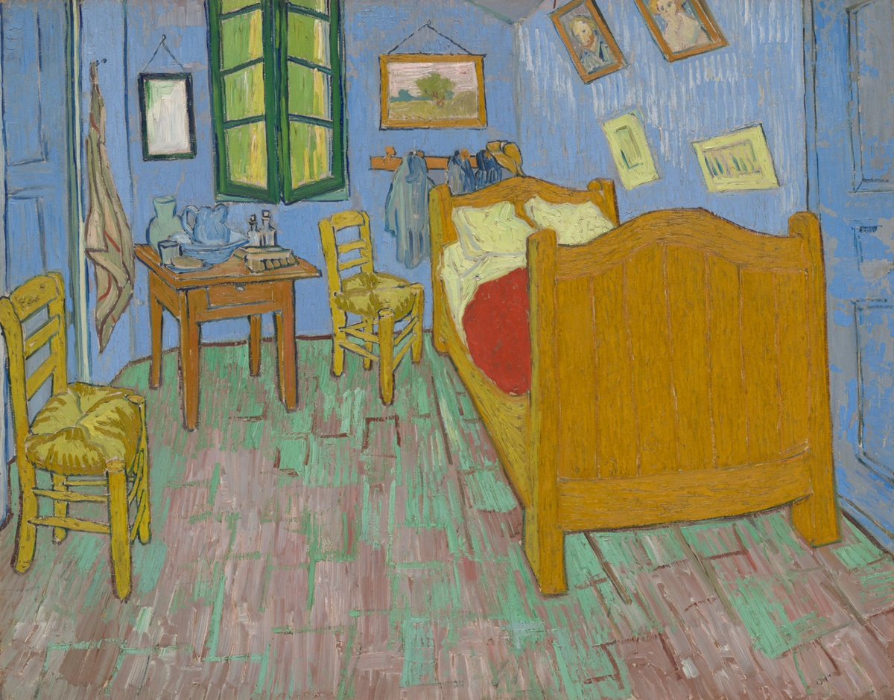

Daily Art Lesson
每天用一幅作品，练一个观察方法。
从古今中外的绘画、版画、雕塑、摄影、设计和地方艺术中选择代表作品，把艺术史知识转化成可练习的绘画技能。

文森特·梵高《卧室》：用限色分区画清室内空间
先把墙、地和家具压成三类大色区，再用五种主色连接分散物件，并把清楚轮廓留在冷暖交界处。

古埃及《进献供品的诺姆神祇》：用头脚基线组织行进人物
先用头部与脚部两条基线统一人物高度，再让躯干朝向一致，并以收放交替的步距画出队列的行进节拍。

贝宁王国《伊约巴·伊迪亚吊坠面具》：用同心轮廓组织正面头像
先稳住中央面形，再把装饰归成内外两圈，并用中央高、两侧低的重复变化组织冠饰，让复杂头像保持清楚层级。

德巴尔巴里《威尼斯鸟瞰图》：用尺度分级整理城市细节
先分城市与水域的大形，再以大锚点、中分区和小纹理建立三级尺度，并用密、中、疏的线条安排阅读顺序。

《七宝山图》：用跨屏主线连接连续山水
先用一条主线跨过屏缝，再让山坡与空白通道在边缘接续，并以“密—疏—密”的段落组织长画面的呼吸。

《门前的黑人骑手》：用门洞框景突出深色主体
先用门洞建立画中框，再把人与马归并成深色剪影，并只在关键轮廓旁加强明暗差，让主体集中而不僵硬。

东北昆士兰《雨林盾》：用长线分区组织狭长画面
先让两三条长线串起上下，再以长短线段、错位停顿和疏密间隔分区，让狭长画面连贯而不单调。

歌川广重《大桥骤雨》：用线条疏密画出雨中空间
先用统一方向组织雨势，再以成束与停顿改变密度，并保留桥、河和远岸的明度层次，让骤雨密集却不压平空间。

印度青铜时代《拟人形器》：用中轴和负形画稳抽象轮廓
先用中轴比较左右重量，再把回卷和下肢之间的空白当作形来画，练习用少量轮廓建立稳定又不僵硬的抽象造型。

伊朗《韦德杯》：先守住字骨，再让装饰字活起来
先用主干和转折守住字的读法，再让人物、鸟和动物承担笔画，练习把装饰字设计得清楚又有想象力。

廷比沙肖肖尼《罐形篮》：用轮廓分带表现圆鼓器形
先找最宽处与收口，再让横带和重复纹样随弧面逐渐压缩，练习不用复杂明暗也能画出器物的包裹感。

泰国《帕玛莱生平故事图册》：用场景分组讲清连续叙事
从人物成组、画面停顿和动作连接入手，练习把三幕小故事画得顺序清楚、角色可辨。

楚文化《鹤与蛇》：用遮挡和轮廓接续理清交错形体
从前后分层、断线接续和线条轻重入手，练习把枝条、绳结与动物形体的复杂穿插画得清楚而不乱。

库巴《拉菲草刺绣绒面布》：用错位和截断让重复纹样活起来
从几何家族、局部错位和画外延续入手，练习让规则纹样保持秩序，又不落入机械复制。

丹尼尔·帕布斯特《柜》：用中轴和分区把复杂家具画稳
从中轴校准、上下左右分区和疏密主次入手，练习把带装饰的家具、立面和器物先画稳，再慢慢加细节。

扬·利文斯《书籍静物》：用大暗面把深色静物画稳
从暗面归并、前后遮挡和少量高光控制入手，练习把书、器皿和深色静物画得集中、结实又不乱。

梅斯卡拉《建筑模型》：用减法概括把建筑体块画稳
从外轮廓、实墙与空洞比例、转折明暗入手，练习把小建筑和门楼速写画得更稳、更结实。

《镂空窗屏（Jali）》：用负形和重复几何把复杂纹样画得又稳又透
从孔洞负形、主次节奏和石材厚度入手，练习把花格、栏杆和装饰纹样画得清楚、通透又不碎。

《勃艮第公爵菲利普墓上的哀悼者》：用布褶大关系画出被遮住的人体重量
从布料的大块垂坠、收束点和连续暗面入手，练习在披袍人物里先立重心，再补褶子的细节节奏。
温斯洛·霍默《湾流》：用大斜线和波浪分组把海面画出压迫感
从船身倾斜、海浪走势和主体包围关系入手，练习先整理大运动方向，再把复杂海面压成清楚的前中后节奏。

斯蒂格利茨《The Steerage》：用对角线分区把复杂人群画得更有秩序
从主斜线、上下分层和黑白大关系入手，练习把多人场景先整理成稳定的大结构，再往里放人物细节。

劳特累克《日本沙发》：用剪影、裁切和留白把海报画得更有戏
从人物外轮廓、边缘裁切和大色面留白入手，练习把人物海报画得更响亮、更集中。

伊兹尼克《花间双鸟纹盘》：用疏密节奏把装饰画面画活
从回旋主线、花叶间距和勾线收形入手，练习把圆形装饰画面画得既丰富又有秩序。
尾形光琳《八桥图屏风》：用斜线节奏组织装饰性画面
从斜桥主线、花丛变奏和大面积留白入手，练习把装饰性花卉画面收紧、理顺并画出呼吸感。

皮拉内西《吊桥》：用重复透视把空间拉深
从台阶、拱门、桥面和远处亮口的层层递进入手，练习把复杂建筑场景画得有秩序、有深度。

阿瑟莱因《受威胁的天鹅》：用 S 形主线带动画面的张力
从脖颈主线、翅膀展开和黑白对比的集中关系入手，练习先抓姿态大势，再安排局部细节。

塞尚《苹果篮》：用倾斜透视把静物画得更稳
从瓶子的垂直轴、果篮前倾和桌布承托关系入手，练习让静物有变化、有张力，但整体仍然站得住。

穆夏《黄道带》：用竖向节奏把装饰画面收紧
从主轴、边框和重复曲线的大小变化入手，练习让装饰性画面既丰富又有清楚的观看顺序。

《倒牛奶的女仆》：用单侧窗光画出安静而结实的体积
从大明暗分组、亮部冷暖到边缘松紧入手，练习在安静的室内场景里把体积画得稳定、厚实又不碎。
《青年库罗斯大理石像》：从正面站姿里看重量轴线
从中轴线、受力腿和几何块面出发，练习把看似对称的人物站姿画得稳定又不僵硬。

《独角兽在花园中休憩》：用剪影和花纹组织装饰性画面
从主体外轮廓、重复花叶和背景疏密关系中，练习先抓大形，再安排装饰性的节奏变化。

韩干《照夜白图》：用线条画出力量与性格
从马的颈部、背线、四肢和绳索关系中，练习用线条表达姿态、力量和情绪。

梵高《麦田与柏树》：用笔触方向组织画面运动
从麦田、柏树、云和山脉的方向性笔触中，练习用笔触带动视线和节奏。

修拉《大碗岛的星期天下午》：用色点训练色彩并置
从点彩、冷暖关系和重复节奏中，练习让颜色在画面上保持明亮、清楚而有秩序。

葛饰北斋《神奈川冲浪里》：用曲线组织画面的力量
从浪形、富士山和船只的大小关系中，学习主次、负形、方向感和画面张力。